2024 年 5 月份阅读总结 02
昨天的阅读总结主要梳理了前面 4 本书的内容：
2024 年 5 月份阅读总结 01
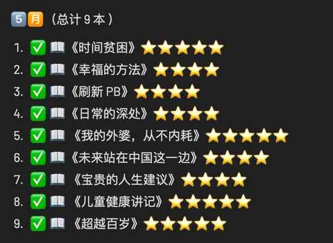
今天会重点介绍下后面 5 本书，希望能起到一些阅读参考的作用。
第 5 本
《 我的外婆，从不内耗》
⭐️⭐️⭐️⭐️⭐️
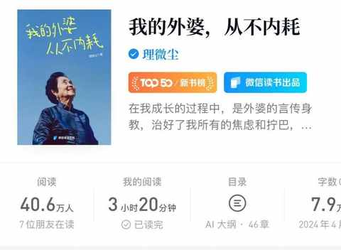
💡 阅读建议：
可根据目录选择感兴趣的内容，也可以按目录从头往后看。
1️⃣ 阅读缘由：
每天打开微信读书的过程中会频繁看到这本书的推荐，点进去看到介绍也觉得不错，所以就加到书架，开始阅读。
看到最后才知道这本书的本名是《你不必是一朵花》，如果当时看到的是这个书名和封面，或许就不会看。
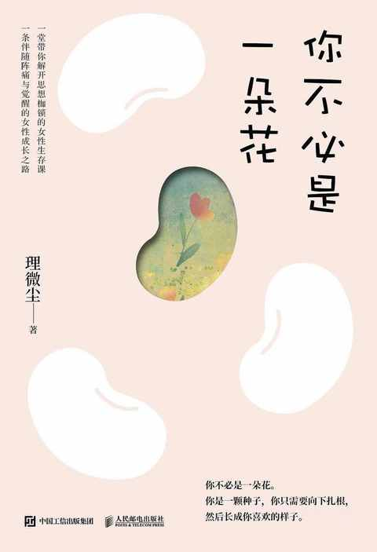
侧面说明书名和封面很重要！
2️⃣ 内容摘录：
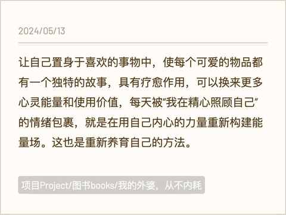
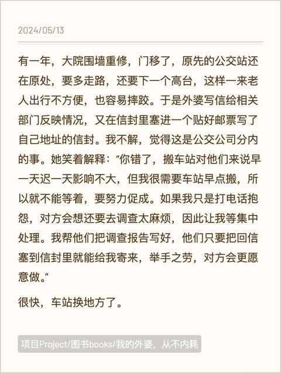
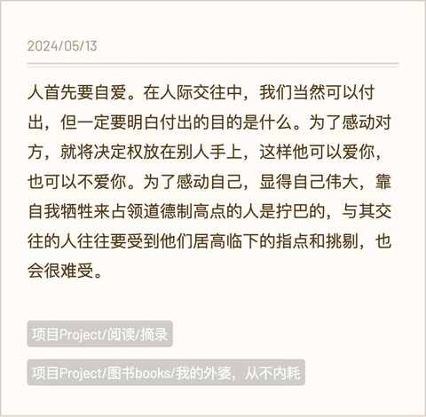
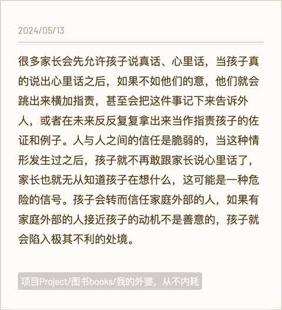
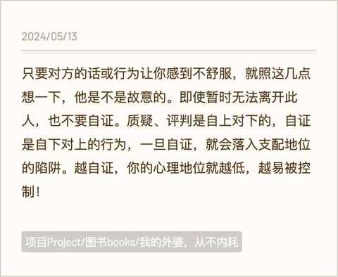
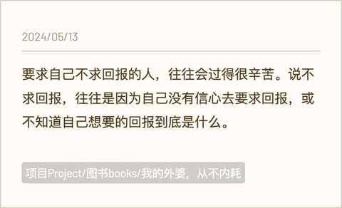
3️⃣ 有启发的点：
① 拒绝内耗，从小事做起
② 认清现实，积极主动面对生活中的困难
③ 与其沉溺于过去的种种，不如把自己重新养育一遍
④ 别进入自证陷阱
⑤ 你可以做到洒脱且不内耗
第 6 本
《未来站在中国这一边》
⭐️⭐️⭐️⭐️
💡 阅读建议：
根据目录选择感兴趣的内容即可。
1️⃣ 阅读缘由：
作者宁南山的 b 站账号之前就经常看，主要聚焦国内的各种产业的当下、过去和未来。
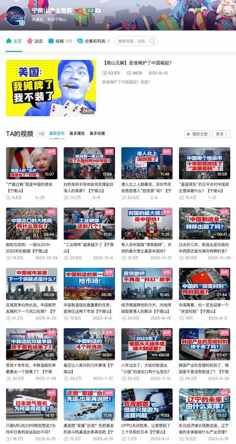
检索到这本书主要还是因为五一的时候刷到他公众号的最新文章：
中国的光芒终究是挡不住的---最近看油管视频有感
主要讲油管上面的网红来中国拍的各种视频，看到之后就检索到他的这本书，遂看之。
而中年男人，对这种有理有据的宏大叙事，可谓是毫无抵抗力。
例如宁南山的另一篇文章：
我最关注的未来两个标志性事件--中国载人登月和无人驾驶普及
我们这一代人，大概率会见证很多的历史。
2️⃣ 内容摘录：
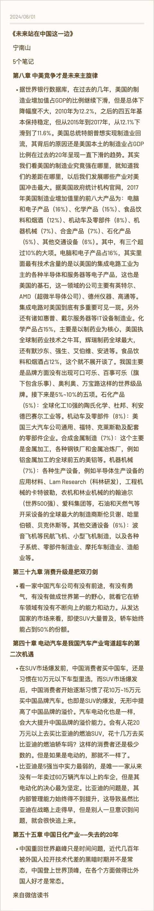
3️⃣ 有启发的点：
① 有些事情从自己的视角去观察很难以小见大，需借助外部的视角去感受。
② 七八年前的比亚迪是 5 强中最弱的，但是电动化的决心最强，投入的资源最多，现在成为了最强者。
③ 现在只是在逐步回到常态：中国在各个方面都会做得的老外好。
④ 抛开情绪的部分，作为宏大叙事中的个体，需要持续观察产业动态，保持敏感度。
⑤ 中国汽车公司再难，也必须啃下轿车这块蛋糕，始终会有 50% 的人选择购买轿车。
第 7 本
《 宝贵的人生建议》
⭐️⭐️⭐️⭐️
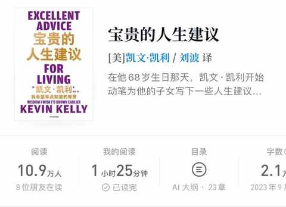
💡 阅读建议：
内容不多，适合从头往后看，直到看完。
1️⃣ 阅读缘由：
要珍惜愿意和普通人讲道理的大佬们，这本书去年就有关注到，一直没来得及看，这个月有时间就看了。
2️⃣ 内容摘录：
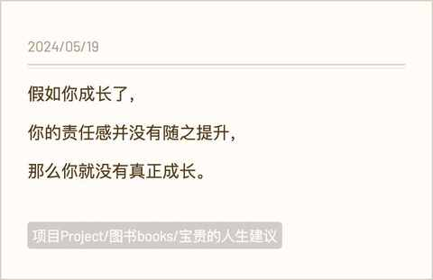
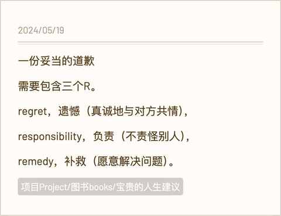
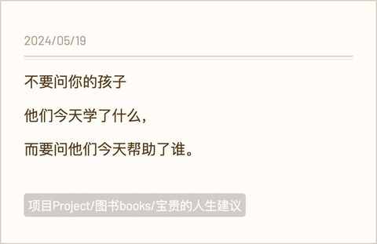
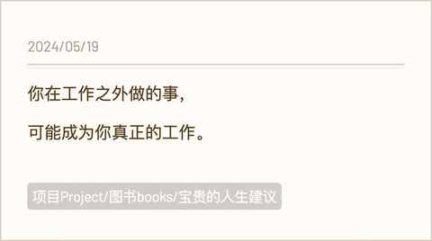
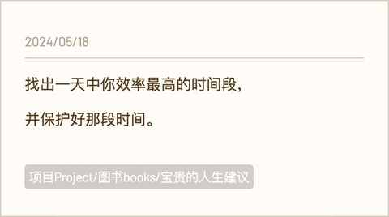
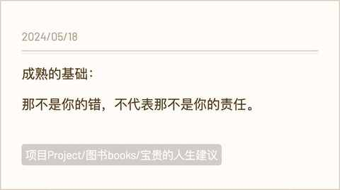
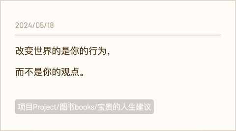
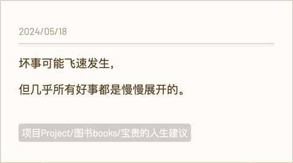
3️⃣ 有启发的点：
① 成长伴随着责任。
② 改变世界的是具体的行为。
③ 什么是一份妥当的道歉：要真诚地负起责任且去补救。
第 8 本
《儿童健康讲记》
⭐️⭐️⭐️⭐️ ⭐️
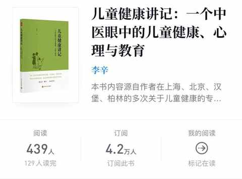
💡 阅读建议：
可根据目录优先看感兴趣的内容，然后你肯定会回头过来把未看完的部分全都阅读完 。
1️⃣ 阅读缘由：
在多个平台都看到有人安利李辛老师的三本书：《经典中医启蒙》、《精神健康讲记》、《儿童健康讲记》。
上个月已经看完了《经典中医启蒙》，所以 5 月份就把 《儿童健康讲记》放到阅读列表。
2️⃣ 内容摘录：
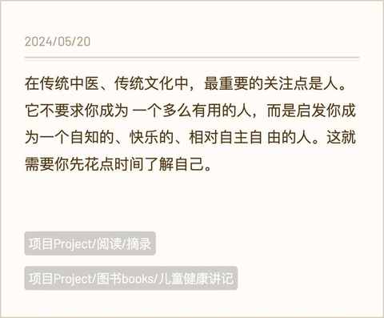
3️⃣ 有启发的点：
① 要关注具体的人，观察具体的行为。
② 了解他人的前提是先了解自身。
③ 劳逸结合，有的放矢。
④ 保持开放的形态，传统医学和现代医学并不对立。
⑤ 小孩子出现的诸多情况，和家长息息相关。
第 9 本
《 超越百岁》
⭐️⭐️⭐️⭐️ ⭐️
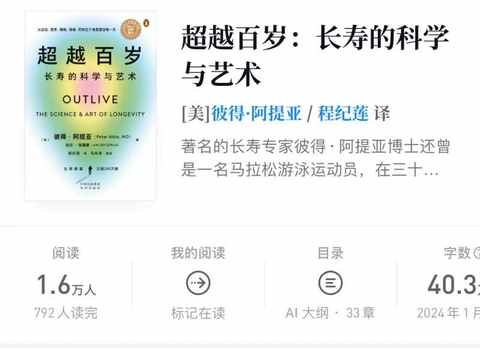
💡 阅读建议：
不妨先从第三部分开始看，该部分内容更具实操价值，然后再选择性的去看前两个部分的内容 。
1️⃣ 阅读缘由：
谁不想活到 100 岁，谁能拒绝有人告诉你 如何长寿。
特别是去年到今年都有不少人在自发安利这本书。
2️⃣ 内容摘录：
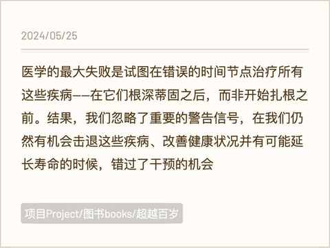
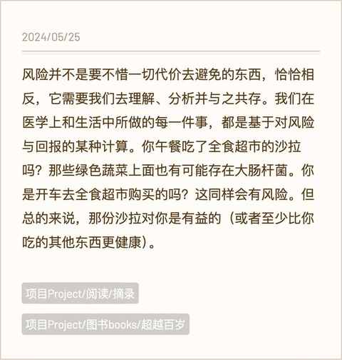
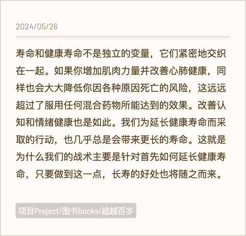
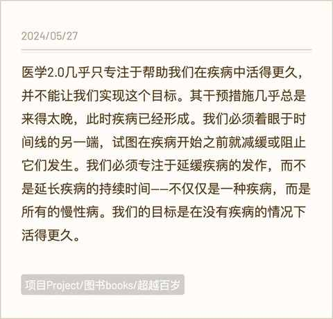
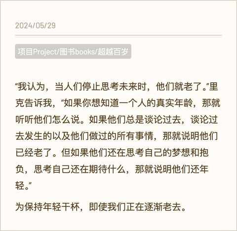
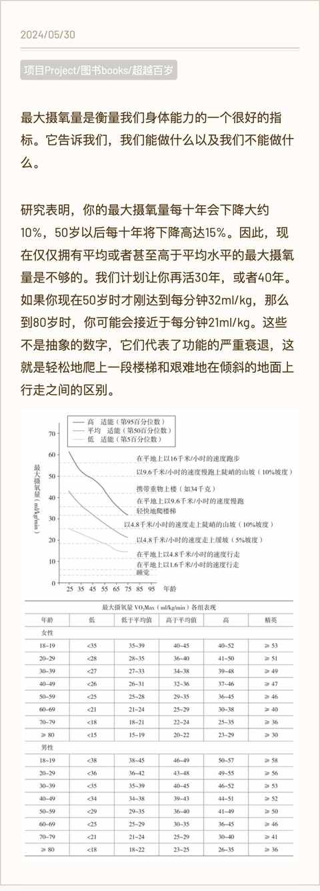
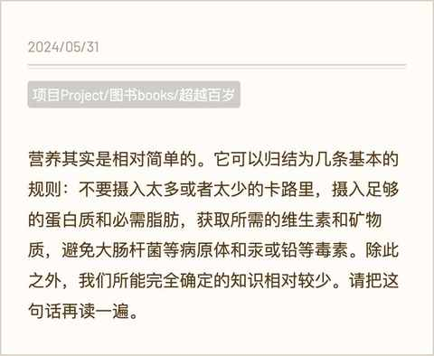
3️⃣ 有启发的点：
① 医学 3.0，要防患于未然。
② 相较活地更长久，健康寿命更重要，所谓健康寿命就是可以完全自理的时间，有的人活了 99 岁，但在死之前都能自理，另一个活了 100 岁，当时已经卧床 10 多年，这种生命的体验是截然不同的。
③ 从现在开始，做有氧，练肌肉吧，尤其是握力。
④ 长寿的密码依然没有被破解，但持续做难而正确的事情会大大增加长寿的概率及老年的生活质量。
⑤ 精神健康不容忽视，和身体健康同样重要。